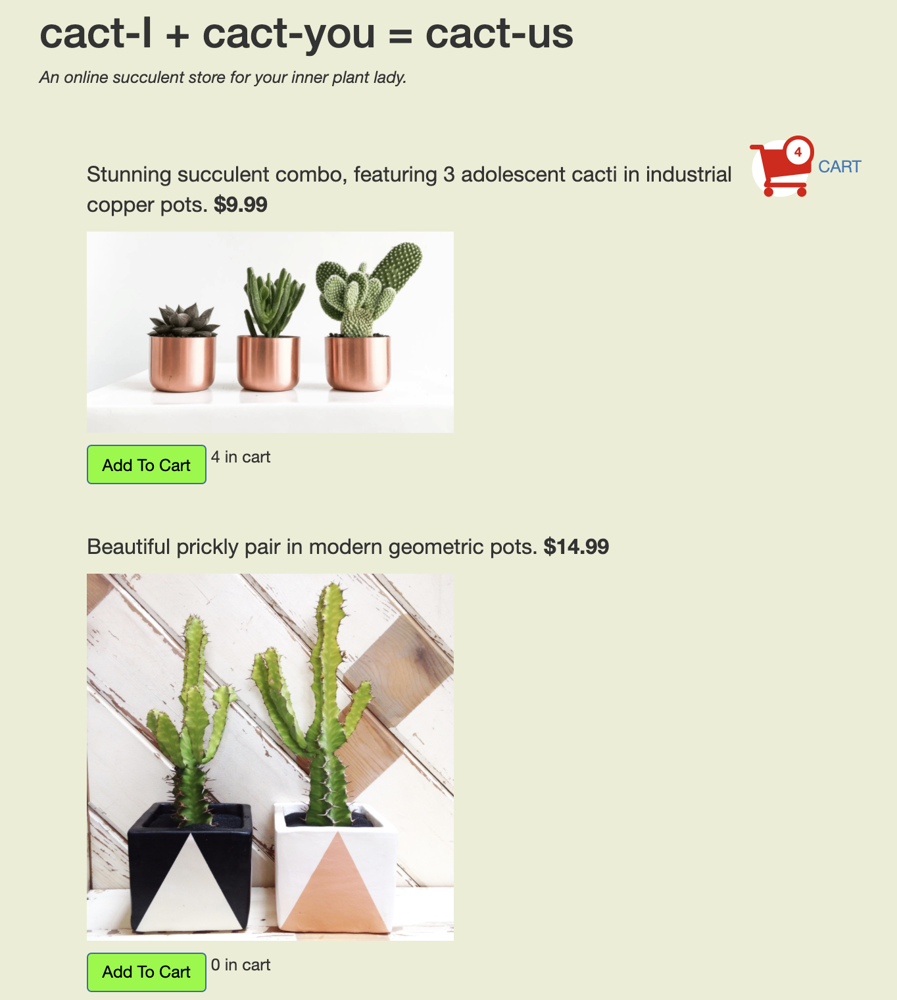
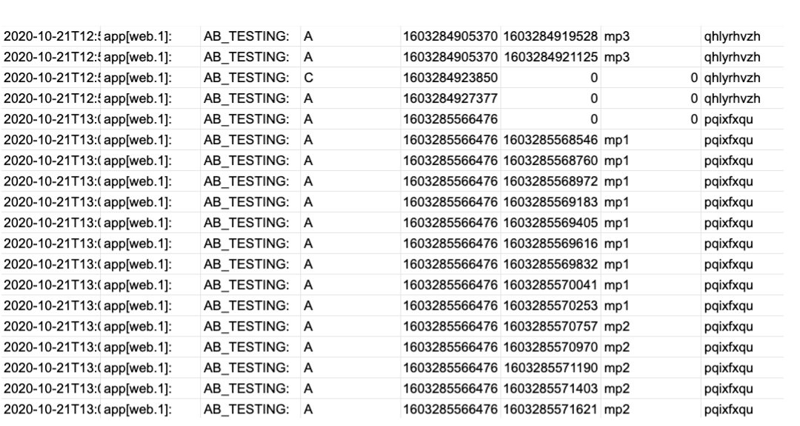
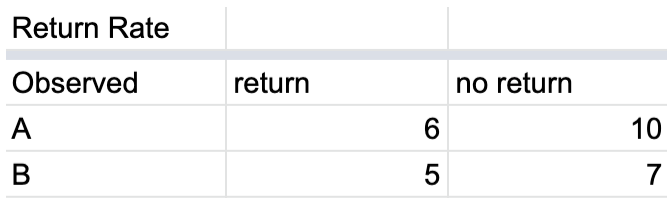
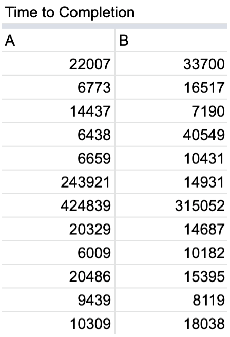

About
The goal of this project was to practice A/B testing, and use statistical tests to understand the results. Interfaces A and B were versions of a cacti shopping site, where users can select cacti to purchase. I was able to collect data from users who were asked to add $150 worth of cacti to their cart. I hypothesized about time to completion and return rate for both interfaces, and used calculate t-score, chi-squared, and p-values to understand my data.
The A/B Sites
Site A

Site B

Key Differences
Site A has a more minimalistic feel. It displays the cart total, and the shopping cart is on the top left. The images are smaller, so the user can see more at once. The link to the checkout page say "checkout" rather than "cart." Site B does not display the cart total, the shopping cart is on the top right, and the buttons are more prominent. The text is not centered, and the background color is beige.
VIEW THE SITEHypotheses
I wrote null hypotheses for the metrics: time to completion and return rate. The following null hypotheses can be rejected by the data, in which case the corresponding alternative hypothesis can be accepted.
Time to Completion
Null Hypothesis: interface A does not have a faster time to completion than interface B.
Alternative Hypothesis: interface A has a faster time to completion than interface
B
Why: The cart total in interface A allows users to more
easily see how much they have in their cart, speeding up the process.
Smaller photos allow for faster navigation through items.
Return Rate
Null Hypothesis: interfaces A does not have a lower return rate than interface B.
Alternative Hypothesis: interface A has a lower return rate than interface
B
Why: The cart total in interface A allows users to know their
total before heading to checkout, giving less of a reason to return to the page.
Data Collection
I collected data from 28 users. The link given to the users opens as interface A or B randomly. After users completed the task (add $150 worth of cacti to cart and checkout), the following data was stored: type of page loaded (a, b, or c for checkout page), time of page load and time of each button click. An example of this data is shown below. After filtering the data, I was able to calculate the time to completion for each user, as well as record whether a user returned to the cacti page. Examples of these calculations are also shown below.


Results
Using the above data I was able to calculate T-score and P-Value for the time to completion metric, and chi-squared and p-value for the return rate metric. A p-value under 0.05 would imply that the differences seen between interface A and B are significant; this was not the case, so the following findings are not significant, and my null hypotheses were not rejected.
Takeaways
Though the differences seen between interfaces A and B were not significant (p-values above 0.05), I have concluded the following:
- A key flaw in this experiment was the limited number of users (28). With this few users, having a low p-value for either of my metrics is difficult. Having more users would allow real trends to show in a statistically significant way.
- The data showed that site B performed better than site A in terms of the time to completion metric. This may have been due to the fact that site B had less users, or chance. As this data the finding was not significant, I cannot make a real conclusion about which interface is better
- I speculate that a lower return rate is superior to a higher one: a shopping site should be intuitive and easy to navigate enough such that when a user decides to checkout, they are not met with any surprises and thus have no reason to return back to the shopping page. The data showed that the return rate for interface A was lower than for interface B. As stated in the hypotheses section, I believe that this is due to the fact that site A displayed the cart total ($) whereas site B did not. In theory, this would give users less reason to return to the shopping page after navigation to checkout.
- As the users of my site were UIUX students doing the same experiment, I feel as though results are biased, and would be meaningless even if the p-values were below 0.05. The users knew the purpose of the experiment, and were most probably trying to get it done quickly (rather than naturally).